Что такое промоакция в Инстаграме и как запустить, оплатив задолженность

- Как сделать промоакцию в Инстаграме*
- Аудитория, бюджет и время показа
- Подключение банковской карты в Инстаграме*
- Запуск промоакции через Ads Manager
- Создание группы объявлений: как разобраться
- Обязательно ли публиковать ту же рекламу в Facebook*
- Сроки размещения и модерации
- Если отклонили рекламу в Инстаграме*
- Как приостановить и удалить промоакцию
- Задолженность по рекламе в Инстаграме*
- Если продолжают списывать деньги за промоакцию
Промоакцию в Инстаграме* можно запустить через Ads Manager или воспользоваться встроенными инструментами в самой социальной сети. Разница в количестве доступных инструментов, возможности заранее посмотреть контент и получить ответ от модерации в развернутом виде.
Как сделать промоакцию в Инстаграме*
Промоакция – это набор инструментов, которые направлены на получение подписчиков, сбор аудитории и рекламу своего аккаунта/продукции/услуг. Владелец профиля сможет запустить рекламную кампанию, если переключит аккаунт в статус «Бизнес» или «Автор».
Как сделать промоакцию с помощью стандартного меню настроек:
- Зайти в Инстаграм* – выбрать публикацию из своего профиля, которую нужно продвигать.
- Нажать под фото/видео: «Продвигать публикацию» - выбрать цель.
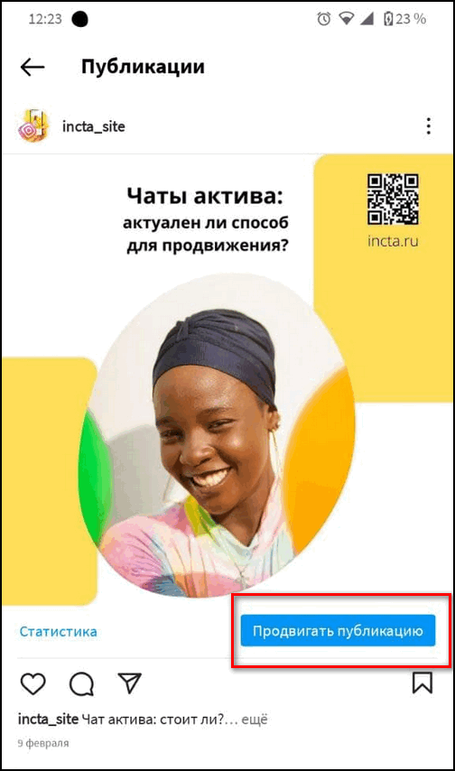
- Указать аудиторию: автоматически или подобрать из своих предпочтений.
- Указать рекламный бюджет и количество дней – добавить способ оплаты и перейти к меню просмотра.
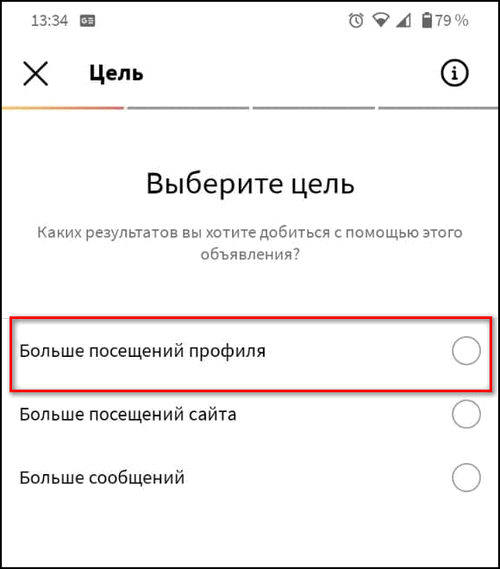
- Запустить рекламу.
Как и в других разделах, относительно новых рекламных кампаний есть черновики. Это значит, что владелец профиля сможет заранее сформировать рекламу, выбрать аудиторию и отложить продвижение на неограниченный срок.
Если работать только с помощью Инстаграм*, то подключение к странице Facebook* не потребуется. Реклама будет распространена только в пределах социальной сети.
Аудитория, бюджет и время показа
Чтобы настроить промоакцию, нужно начинать с аудитории. Это предполагаемый список пользователей, которые увидят рекламное предложение. И выбор потенциальных посетителей начинается с формирования целевой аудитории. Вопросы и ответы по ЦА:
| ЦА: | НЕ ЦА: |
| Женщины/мужчины, возрастом от 25 лет | Молодые люди от 14 до 35 |
| Ж/М с доходом от 50 000 | Женщины с деньгами |
| Владельцы устройств: Samsung, iPhone последних моделей, не в кредит | Обладатели смартфонов |
| Домохозяйки, женщины с детьми до трех лет | Люди, у которых есть дети |
| Интересуются спортом, медитациями, проводят в социальной сети до 3 часов в день | Молодые и спортивные |
Разница в том, что вторая графа – это общая характеристика, по которой нельзя составить портрет клиента. Первая – направлена на определенную возрастную категорию, учитывает финансовые возможности, социальный статус.
Бюджет и время показа при формировании рекламы, объединены. Это метрики, которые необходимы для выбора времени показа рекламы. При запуске первой промоакции лучше протестировать макет в течение первых трех дней. Бюджет влияет на количество пользователей, которые могут увидеть рекламу. Чем выше – тем больше подписчиков и потенциальных клиентов перейдут по рекламному предложению.
Подключение банковской карты в Инстаграме*
На вопрос: «когда Инстаграм* списывает деньги за рекламу» можно ответить двумя вариантами: по завершению и если пользователь сразу установит оплату. Но стандартно, социальная сеть поддерживает систему отложенной оплаты, то есть, когда промоакция будет завершена. Как подключить карточку:
- Перейти к созданию промоакции – последний раздел: «Оплата».
- Нажать по тексту – выбрать регион и валюту.
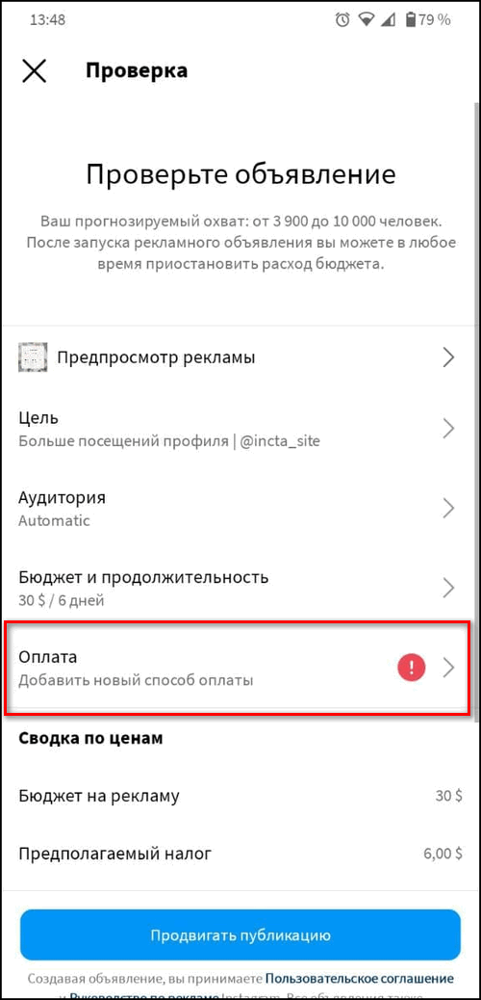
- Указать банковскую или кредитную карту – вписать данные.
- Подождать, пока пройдет подтверждение.
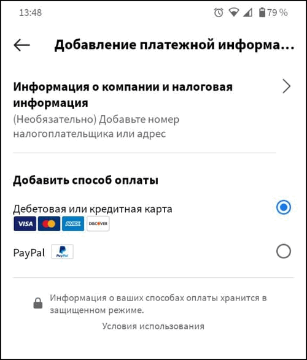
- Сохранить и добавить к рекламной кампании.
При подключении карточки со счета будет списана сумма в 50 центов, чтобы проверить работоспособность. Эти средства будут возвращены на счет, как только подтвердится актуальность счета. Если пользователь создает промоакцию повторно или хочет поменять банковские данные:
- посетить раздел: «Автор» - Способы оплаты;
- перейти к созданию фиктивной промоакции и указать другие данные.
То есть, создавая повторно промоакцию, пользователь может изменить данные карточки, которые указал ранее. Предыдущую можно удалить через меню управления способами оплаты.
Запуск промоакции через Ads Manager
Ads Manager – это набор инструментов от Facebook*, которые направлены на улучшение работы с промоакциями,
Первое, что должен сделать пользователь – подключить аккаунт Facebook* к Instagram*. Это возможно лишь в том случае, если в FB создать сообщество или публичную страницу и уже к ней добавить аккаунт Инстаграма*.
Как воспользоваться Ads Manager:
- Перейти с компьютерной версии – нажать по кнопке: «Авторизация».
- Создать – выбрать цель рекламной кампании.
- Далее – перейти в группе объявлений к пункту: «Новая реклама».
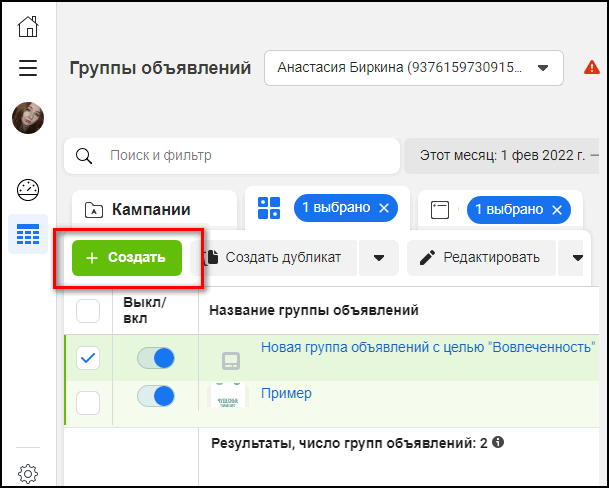
- В идентификации компании указать аккаунт из Инстаграма* – Настройка рекламы.
- Выбрать из существующих публикаций – указать кнопку под публикацию.
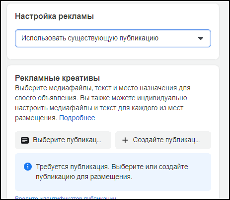
В боковом меню предпросмотра можно увидеть, как будет представлена в Ленте. Но для настройки рекламы именно в Инстаграм*, нужно выбрать актуальный плейсмент, исключив все остальные. Это возможно для группового редактирования объявлений.
Создание группы объявлений: как разобраться
Группа объявлений в Фейсбуке*, для Инстаграма*, необходима для управления сразу несколькими промоакциями. Они могут быть направлены на Facebook* и Instagram*: по-отдельности и вместе. В настройках группы объявления можно выбирать:
- бюджет: на весь срок и отдельный дневной;
- дата запуска рекламных объявлений;
- заранее подобранная аудитория;
- места размещения рекламы;
- прогнозы.
То есть, пользователь может создать несколько рекламных объявлений с одинаковым бюджетом. Тогда сумма будет разделена между промоакциями. Чтобы отредактировать места размещения:
- Зайти в раздел: «Новая группа объявлений».
- Места размещения – Указать вручную.
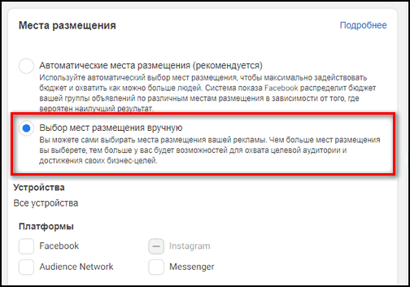
- Убрать галочки везде кроме Лента Instagram*.
- Сохранить внесённые изменения.
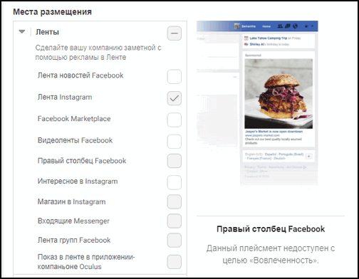
Ниже можно отредактировать бюджет и выбрать формат: ежедневный или на весь срок. В правой части меня появится расчет предполагаемого количества зрителей, которые увидят контент. В левой части экрана появится: «Группы объявлений» и отдельная реклама. То есть, раздел с группами необходим для общего редактирования рекламных запросов, когда отдельные – отведены под тонкую настройку.
Обязательно ли публиковать ту же рекламу в Facebook*
В старых версиях Ads Manager нужно было размещать объявление сразу на двух платформах: Facebook* и Instagram*. Но оплата была как за одну. В новой – можно отобрать плейсменты, исключив те, которые не отвечают пожеланиям рекламодателя. Через редактирование группы объявлений можно указать те площадки, которые подходят для размещения рекламы. Но если владелец страницы желает, чтобы о его товаре узнало большее число потенциальных покупателей – ту же рекламу можно добавить к размещению в FB.
- В Ads Manager перейти в раздел «Группа объявлений».
- Места размещения – указать Facebook* и Instagram*.
Сроки размещения и модерации
После того, как рекламодатель отправил объявление, начинается срок рассмотрения. Это значит, что в течение недели первое объявление будет рассмотрено модерацией и на предмет допущения ошибок. Срок модерации в зависимости от количества ранее размещенных промоакций:
- первая – до недели;
- следующие 2-5 – до трёх дней.
После первых промоакций администрация учитывает предыдущие ошибки автора и может применить повторные санкции.
- неправильно заполненное описание;
- картинка не соответствует правилам социальной сети;
- на изображении присутствует логотип или другая марка бренда.
Если пользователь неправильно создал объявление, то придет уведомление с описанием допущенной ошибки. Нужно исправить ошибки и отправить рекламу на рассмотрение заново.
- в Инстаграме*. Раздел «Оповещения», где появится сообщение: «промоакция отклонена, перейдите чтобы прочитать подробнее»;
- в Facebook*. Также в уведомления появится.
Если пользователь не отредактирует сообщение, то промоакция будет перемещена во вкладку: «Черновики». Оттуда публикации можно заново размещать или же удалить.
Если отклонили рекламу в Инстаграме*
Прежде чем создавать промоакцию в Инстаграме* нужно ознакомиться с правилами сервисами. В социальной сети есть требования, которые касаются рекламодателей. Что запрещено в рекламе Instagram*:
- публикации «до» и «после»: косметические средства, похудения, услуги. В особенно, если касается курсов/диет/похудения;
- рекламировать лекарственные препараты;
- табачная продукция, наркотическая и алкогольная;
- оказание услуг интимного характера.
- нарушение авторских прав. Применение чужих фото или видео, музыкальных композиций;
- ложная информация. Даже та, которая порочит репутацию другой компании;
- дискриминация, расизм;
- микрофинансовые органиации;
- продажа частей тела, «черный рынок».
Есть реклама с ограничениями, то есть те, на которые нужно получить письменное разрешение:
- азартные игры;
- онлайн-знакомства;
- криптовалюта;
- финансовые и страховые услуги.
Такие рекламные предложения могут быть отклонены, но если правильно заполнить описание и указать целевую аудиторию в пределах возраста совершеннолетия – проблем возникнуть не должно.
Если пользователь заметил, что допустил ошибку при создании промоакции:
- Зайти в Ads Manager - выбрать объявление.
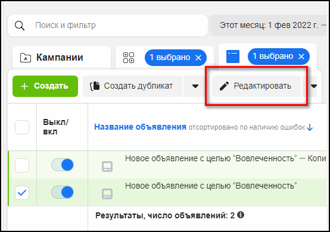
- Нажать сверху «Редактировать» - появится окно с возможностью внести изменения или вовсе - сделать заново всю рекламу.
После внесения изменений их можно сохранить или отправить на повторное рассмотрение. Если в промоакции допущена ошибка - в группе объявлений будет значок в виде восклицательного знака. Такая реклама не допускается к дальнейшему размещению. Также, нужно учитывать правила некоторых стран, если реклама запланирована не только на страны СНГ. Такие предложения, как «рулетки» или «сундуки с подарками» могут быть запрещены в законодательных рамках.
Как приостановить и удалить промоакцию
Оставить рекламное продвижение возможно с помощью Facebook* и Instagram*. В случае с удалением с помощью социальной сети, нужно удалить созданную промоакцию.
- Выбрать публикацию, которая продвигается.
- Нажать по кнопке: «Посмотреть продвижение».
- В правом верхнем углу нажать по значку «корзины».
- Удалить – Подтвердить действие.
- Зайти в Ads Manager – выбрать группу продвигаемого поста.
- Нажать рядом: «Выключить».
Или, с помощью выделения перейти к разделу: «Еще» - Удалить. В этом случае, промоакция будет полностью удалена. Есть еще один способ, как приостановить – перейти в Facebook* в раздел «Биллинг» и убрать банковские данные. После того, как средств для оплаты рекламы не останется – Facebook* прекратит продвижение. Но у такого способа есть недостаток: продвижение может быть в счет кредита. То есть, пользователь получит позже счет, который нужно оплатить.
Задолженность по рекламе в Инстаграме*
Если в Инстаграме* появилась задолженность по оплате рекламы, то могут возникать такие проблемы:
- не получается оплатить долг. Уведомление: «Недействительное разрешение»;
- сумма оплаты превышает ту, которая была установлена при продвижении;
- средства продолжали списываться даже по завершению промоакции.
В любом из случаем, пользователю лучше обратиться за помощью в техническую поддержку. В особенности, если средства были начислены неверно или сумма превышает ту, которая была заявлена при расчете промоакции. Где посмотреть сумму бюджета:
- В Ads Manager перейти в раздел: «Группа объявлений».
- Дойти до пункта: «Бюджет» - указать дневной.
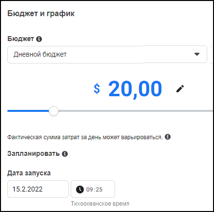
- Справа появится расчет по количеству целевой аудитории и предполагаемый бюджет.
Снизу появится: «Оптимизация и показ» - Контрольная сумма. Туда нужно ввести максимальную сумму, которую пользователь готов потратить на рекламу.
Как посмотреть текущую задолженность:
- Перейти в Ads Manager – нажать: «Все инструменты».
- Биллинг – посмотреть, какая сумма находится в теле долга.
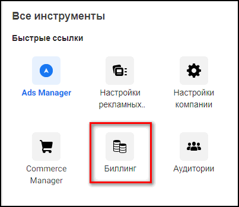
- Перейти к способам оплаты – заплатить за продвижение.
Но если появляется ошибка: либо подождать в течение суток, либо обратиться в техническую поддержку. Также, пользователю поможет изменение привязанной карточки или внесение на счет большей суммы. К примеру, если на банковском счету меньше необходимых средств, то может не списать вся сумма в стоимость долга.
Если продолжают списывать деньги за промоакцию
Последняя ошибка, которая может возникать в социальной сети – если после остановки или удалении промоакции продолжают списывать средства. Такое происходит, если рекламная кампания не была завершена или в текущий момент произошла ошибка на стороне сервера. Также, если владелец профиля в группе объявлений запустил несколько карточек. Как обратиться в техническую поддержку по финансовому вопросу:
- Перейти по ссылке: facebook.com/business/help*.
- Выбрать: «Начать чат со службой поддержки» - Биллинг и платежи.
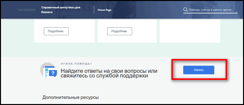
- С моего аккаунта средства списаны дважды – выбрать в статье цитату: «Сообщите нам об этом».
Далее, появится окно с выбором рекламного кабинета и возможностью подробнее описать возникшую проблему. Если деньги продолжают списываться, то выбрать: «У меня вопрос о платеже», выбрать следующий вариант: «Я не давал разрешений на этот платеж».
После, появится заявка для заполнения относительно несанкционированного списания средств. Все доступные графы нужно заполнить, чтобы получить ответ от администрации. В социальной сети отвечают в течение трех рабочих дней, в особенности, если вопрос касается финансов.
Пользователь должен подтвердить, что не совершал каких-либо действий и средства были списаны без его согласия. Это значит, что в Ads Manager нужно проверить наличие других промоакций, которые могут запущены.